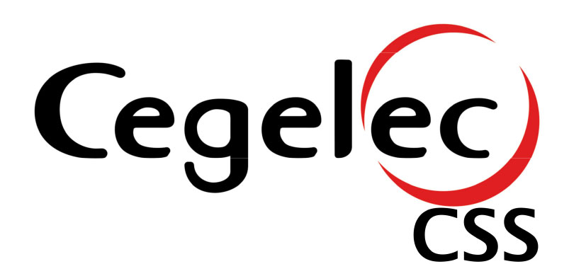
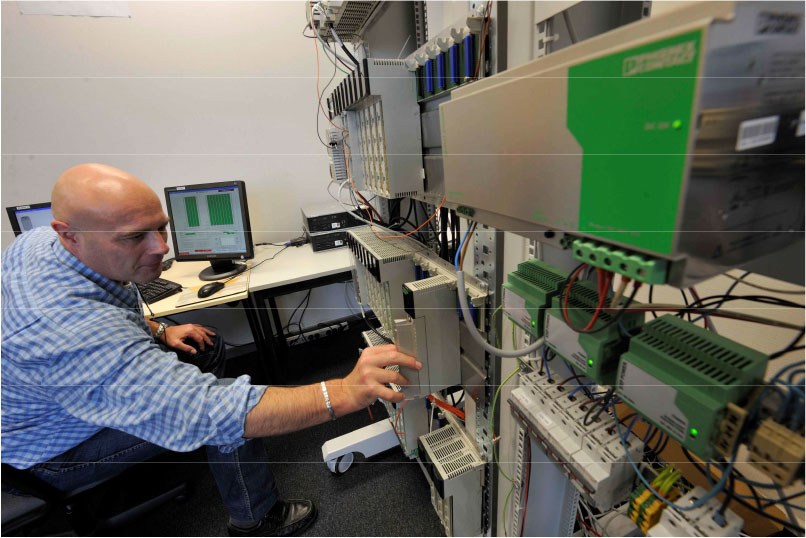
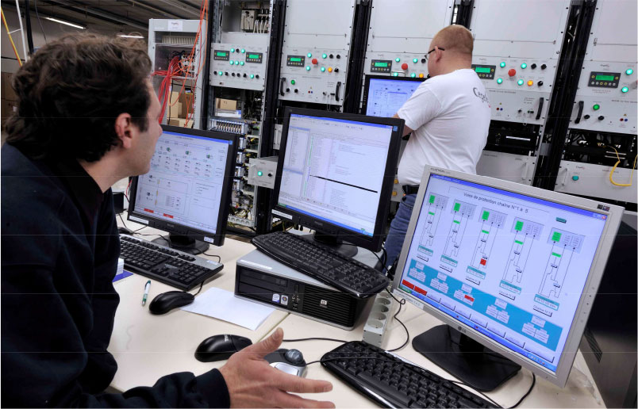
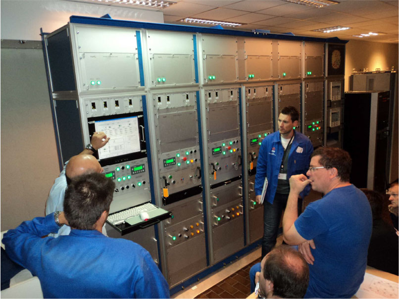

Cegelec CSS SA is a reference in Belgium and abroad. Specialised in the design and manufacturing of control systems for the energy sector (power plants, electricity transport and distribution networks,…), our company is based on over 40 years of experience to guarantee our customers quality service in the respect of industry rules in this sector.
As Expertises :
- Development of protection and safety equipments in nuclear power plants
- Design and manufacturing of Distributed Control Systems
- Technical assistance and monitoring of Distributed Control Systems
- Supervision
References :
- Revamping of the ventilation control and monitoring of the control room of Electrabel Doel site
- WAB (water treatment and waste plant) in Electrabel Doel
- Management of storage of waste fuel in Electrabel Doel
- Replacement of neutron flux detectors in Electrabel Tihange
- Revamping of RIC systems for the 34 units of EDF nuclear power plants.(level 900MW)
- TAC (combustion turbine) in the 1300MW EDF nuclear power plants




Contact Person
Mr Jean-Marie Tarin
Director
email: jean-marie.tarin@cegelec.com
tel: +32 71 25 76 80
fax : +32 71 25 76 81
www.cegelec.be
Av. Jean Mermoz, 22 – Bâtiment Mermoz 4
Aéropole de Gosselies
B-6041 Gosselies
Belgium
Contact Person
Mr Jean-Marie Tarin
Director
email: jean-marie.tarin@cegelec.com
tel: +32 71 25 76 80
fax : +32 71 25 76 81
www.cegelec.be
Av. Jean Mermoz, 22 – Bâtiment Mermoz 4
Aéropole de Gosselies
B-6041 Gosselies
Belgium